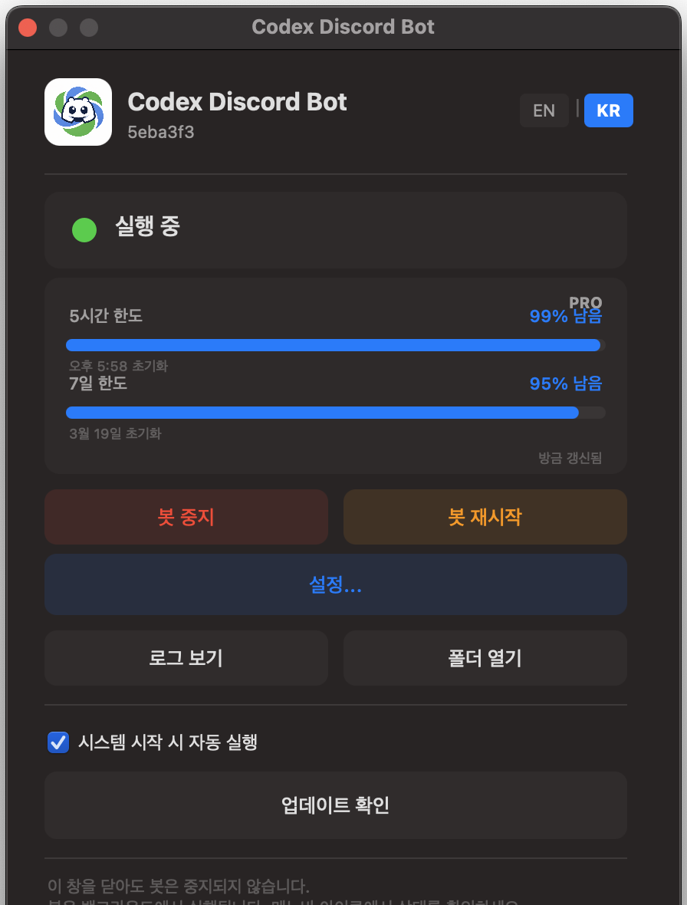
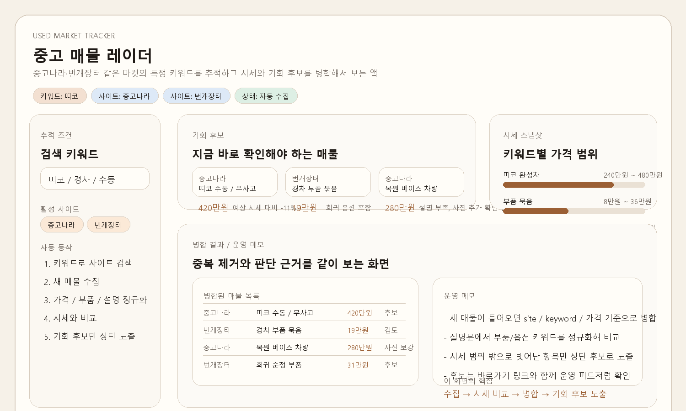
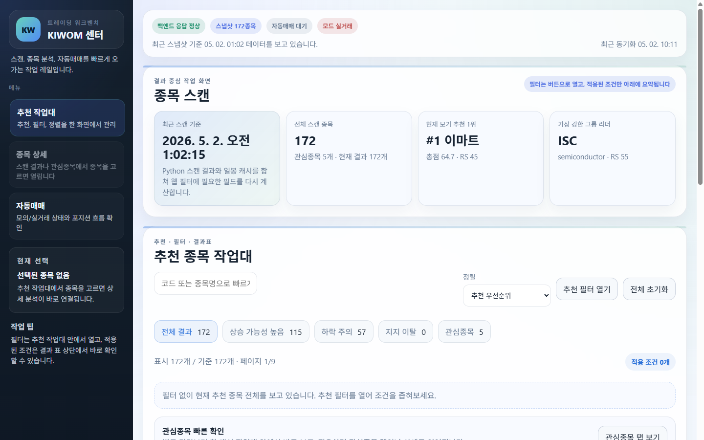
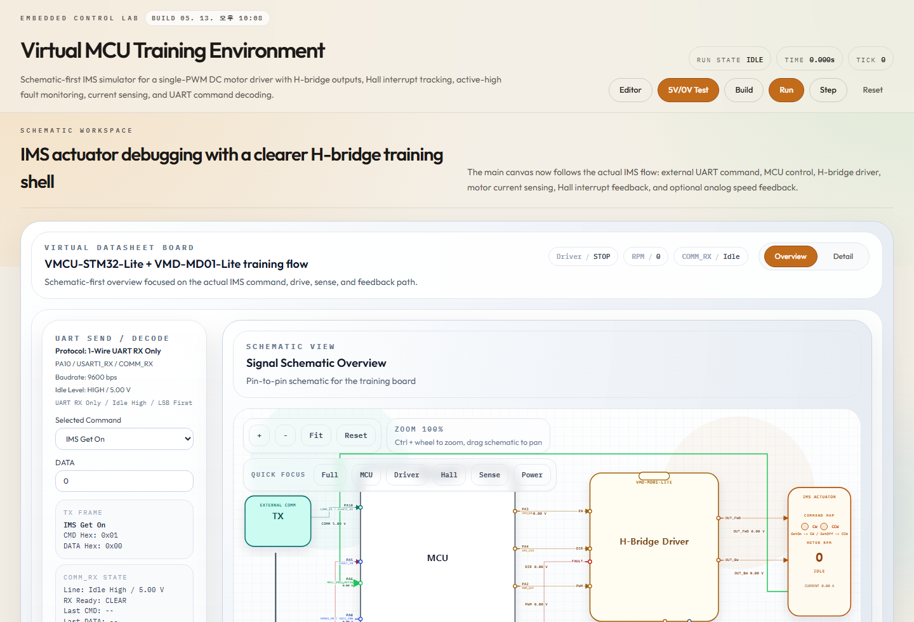

저를 짧게 설명하면
자동차 임베디드 분야에서 모터 제어, 바디 제어기, AUTOSAR 자동화처럼 정확한 동작과 반복 검증이 중요한 업무를 경험했습니다. 개인 프로젝트에서는 이 경험을 바탕으로 상태를 놓치기 쉬운 작업, 반복 검색이 필요한 정보, 판단 기준이 섞이기 쉬운 흐름을 도구로 정리했습니다.
Project-based engineering portfolio
자동차 제어·검증 실무 경험을 바탕으로, 반복 확인이 필요한 문제를 직접 도구로 만들었습니다. 각 프로젝트는 문제 정의, 설계 방식, 구현 화면, 확인 가능한 결과를 중심으로 정리했습니다.
01
소개
자동차 임베디드 분야에서 모터 제어, 바디 제어기, AUTOSAR 자동화처럼 정확한 동작과 반복 검증이 중요한 업무를 경험했습니다. 개인 프로젝트에서는 이 경험을 바탕으로 상태를 놓치기 쉬운 작업, 반복 검색이 필요한 정보, 판단 기준이 섞이기 쉬운 흐름을 도구로 정리했습니다.
02
실무 경험
차량 내부 냉매 유로가 목표 위치까지 안정적으로 열리고 닫히도록 모터 제어 로직을 구현했습니다. PMSM 모터의 힘을 기어와 액추에이터로 전달하고, 위치 판단, 상전환, zero crossing 감지, sensorless 제어, STALL 감지, 재시도, 목표 위치 정지처럼 실제 동작 안정성에 영향을 주는 제어 흐름을 다뤘습니다.
운전자가 조작한 기능이 실제 차량 제어와 진단 흐름으로 이어지는 과정을 다뤘습니다. 조향 컬럼 모듈, 파워 시트 유닛, 통합 제어기 선행 과제를 통해 차량 기능이 사용자 입력, 통신, 진단, 기능안전 문서와 어떻게 연결되는지 경험했습니다. 구현뿐 아니라 문서 정리와 협업 산출물 관리까지 함께 다뤘습니다.
반복되는 차량 소프트웨어 설정 작업을 자동으로 코드화하고 검증하는 흐름을 만들었습니다. AUTOSAR ARXML을 읽고 C 코드 생성과 빌드 검증까지 이어지게 했으며, 생성 결과를 WSL/GCC 환경에서 확인할 수 있게 만드는 방향으로 작업했습니다.
03
개인 프로젝트
Remote Job Monitoring Console
장시간 실행되는 자동화 작업의 상태, 진행률, 예상 완료 시간, 로그, 중지/재시작 명령을 한 화면에서 확인하도록 만든 운영 패널입니다. 작업이 멈췄는지 직접 터미널을 보지 않아도 판단할 수 있고, 문제가 생기면 원격으로 바로 조치할 수 있게 구성했습니다.

Multi-Agent Harness Engineering
큰 작업을 하나의 에이전트에게 맡기는 대신, 여러 AI 작업 세션을 역할별로 나누어 동시에 운용하는 Codex 작업 하네스입니다. 여러 작업 창을 나란히 두는 방식으로 각 에이전트가 조사, 구현, 검증, 리뷰 역할을 맡아 진행 상황을 공유하도록 구조를 설계했습니다.
Lead Session
요청 분석 / 작업 분해 목표, 제약, 완료 기준을 정리하고 각 에이전트의 역할을 배정합니다.Agent 01
구현 파일 수정, UI 반영, 기능 연결을 담당합니다.Agent 02
검증 테스트, 스크린샷, 회귀 확인을 분리해 수행합니다.Agent 03
리뷰 표현 품질, 누락, 위험 요소를 독립적으로 점검합니다.Merge
통합 / 배포 각 결과를 메인 세션에서 합치고 공개 페이지 반영을 확인합니다.Used Market Tracking System
중고나라, 번개장터 등 여러 사이트의 관심 키워드 매물을 모아 가격, 상태, 등록 시점, 확인 포인트를 비교하는 도구입니다. 반복 검색을 줄이고, 조건에 맞는 후보를 빠르게 추려볼 수 있도록 매물 정보를 한 화면에서 정리했습니다.

Stock Analysis & Auto-Trading Workbench
종목 후보, 조건 충족 여부, 자동매매 실행 전 체크 항목, 실행 상태와 기록을 분리해 보여주는 주식 자동매매 워크벤치입니다. 자동매매를 무작정 실행하는 화면이 아니라, 조건 검토와 실행 경계를 분리해 사람이 판단 흐름을 확인한 뒤 자동매매 상태를 관리할 수 있도록 구성했습니다.

Web-based MCU Simulator
브라우저에서 가상 보드, 레지스터 값, 신호 흐름, 실행 제어를 함께 확인하는 MCU 학습 도구입니다. 실제 장비 없이도 코드 실행에 따라 보드 상태가 어떻게 바뀌는지 따라볼 수 있게 만들었습니다.

04
작업 방식
문제 정의
계속 확인해야 하는 상태, 놓치기 쉬운 조건, 수작업으로 반복되는 과정을 먼저 관찰합니다.
구조 설계
큰 기능을 한 번에 만들기보다 사용자가 확인해야 할 흐름과 기준을 단계별로 분리합니다.
구현·계측
상태, 로그, 버튼, 결과처럼 사용자가 직접 확인할 수 있는 형태로 구현합니다.
리뷰·검증
왜 만들었는지, 어떤 기준으로 설계했는지, 다음에 무엇을 개선할 수 있는지 기록합니다.